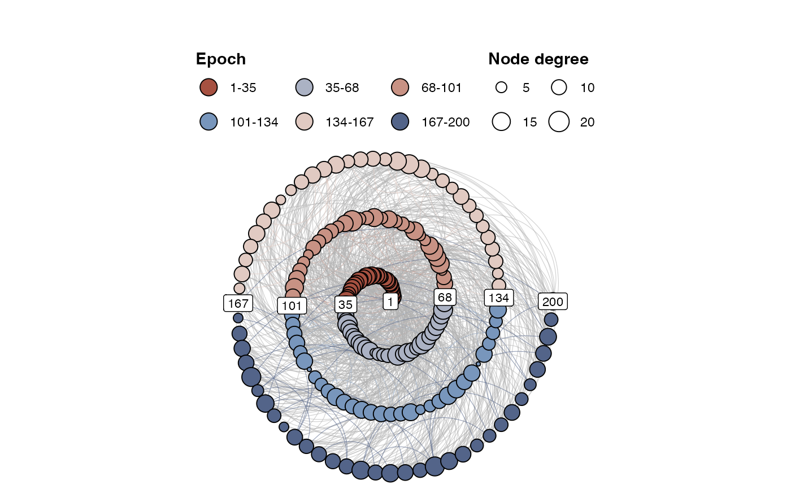

make_spiral_graph(
g,
type = "Archimedean",
arcs = 6,
a = 1,
b = NULL,
rev = FALSE,
curvature = -0.6,
angle = 90,
markTimeBy = NULL,
labelSize = 3,
alphaV = 1,
alphaE = 0.6,
showArrows = FALSE,
title = "",
subtitle = "",
showEpochLegend = TRUE,
markEpochsBy = NULL,
epochColours = NULL,
epochLabel = "Epoch",
showSizeLegend = FALSE,
sizeLabel = "Size",
scaleVertexSize = c(1, 6),
vertexBorderColour = "black",
scaleEdgeSize = 1/5,
edgeColourLabel = "Weight",
showEdgeColourLegend = FALSE,
edgeColourByEpoch = TRUE,
defaultEdgeColour = "grey70",
doPlot = TRUE,
ggplotReturn = FALSE,
igraphReturn = FALSE
)An igraph object. If (rev = FALSE) the vertex with the lowest index will be placed in the centre of the spiral, the highest index will be most outer vertex,
Spiral type, one of "Archimedean","Bernoulli","Fermat", or, "Euler" (default = "Archimedean")
The number of arcs (half circles/ovals) that make up the spiral (default = 10)
Parameter controlling the distance between spiral arms, however, the effect will vary for different spiral types (default = 0.5)
Parameter controlling where the spiral originates. A value of 1 will generally place the origin in the center. The default NULL will choose a value based on the different spiral types (default = NULL)
If TRUE the vertex with the highest index will be placed in the centre of the spiral (default = FALSE)
The curvature parameter for edges see geom_curve() (default = -0.7)
The angle parameter for edges see geom_curve() (default = 90)
Include a vector that indicates time. The time will be displayed on the plot. Pass TRUE to generate auto labels (experimental)
The size of text in the annotation labels (default = 3)
Set transparency for Vertices (default = 1)
Set transparency for Edges. A single numeric, or a vector of length ecount(g) (default = 0.8)
Show arrows at the end of the edges? (default = FALSE)
A title for the plot
A subtitle for the plot
Should a legend be shown for the epoch colours? (default = TRUE)
A vector of length vcount(g) indicating epochs or groups (default = NULL)
A vector of length vcount(g) with colour codes (default = NULL)
A title for the epoch legend (default = "Epoch")
Should a legend be shown for the size of the nodes? (default = FALSE)
Guide label, use it to indicate if V(g)$size represents some measure, e.g. igraph::degree(), or, igraph::hub_score(), igraph::strength() (default = "Size")
Scale the size of the vertices by setting a range for ggplot2::scale_size(). This will not affect the numbers on the size legend (default = c(1,6))
Draw a border around the vertices. Pass NULL to use the same colour as the fill colour (default = "black")
Scale the size of the edges by a constant: E(g)$width * scaleEdgeSize (default = 1/5)
Use to indicate if E(g)$color represents color coding based on some property. (default = "Weight")
Should a legend be shown for the colour of the edges? (default = FALSE)
Should edges that connect to the same epoch be assigned the epoch colour? This will ignore edge colour info in E(g)$color. (default = TRUE)
Colour of edges that do not connect to the same epoch (default = "grey70")
Produce a plot? (default = TRUE)
returns the ggplot object (default = FALSE)
returns the intermediate iGraph object. This will not look the same as the final graph, but has most of the attributes, like edge and vertex colors and spiral layout (default = FALSE)
A ggplot object.
To keep the igraph object, use the layout function layout_as_spiral() when plotting the graph.
library(igraph)
g <- igraph::sample_gnp(200, 1/20)
V(g)$size <- degree(g)
make_spiral_graph(g, markTimeBy = TRUE, showSizeLegend = TRUE, sizeLabel = "Node degree")
